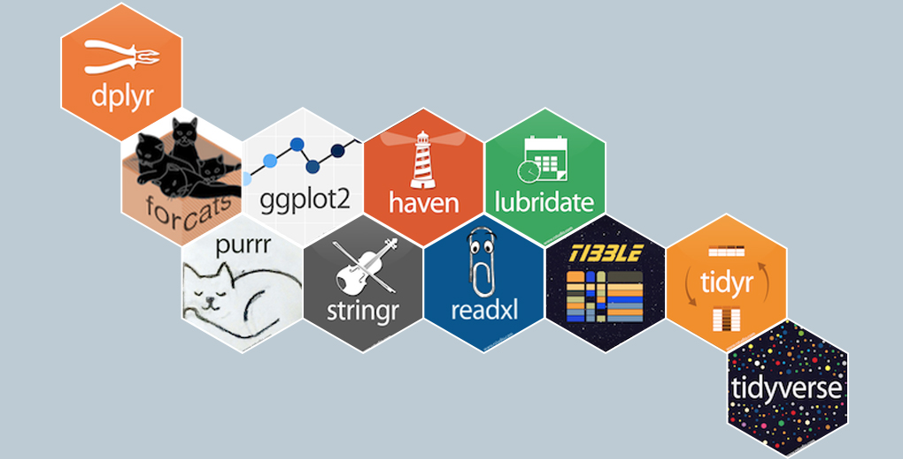

age sex hospital
1 28 F SÖS
2 25 F SÖS
3 30 M KS
4 40 M KS
5 39 F KS
6 55 F DS
7 62 F DS
8 22 M SÖS
9 50 M DS
10 35 F SÖS
[1] M
Levels: F M
Väljer 3e raden och andra kolumnen
Datatruktur i R
Specificerar man bara en av dem så väljs alla rader/columner
datafil[ radnummer, ]
datafil[ , colnummer ]
Exempel:
datafil# Exempeldatafil[3,]datafil[,3]
age sex hospital
1 28 F SÖS
2 25 F SÖS
3 30 M KS
4 40 M KS
5 39 F KS
6 55 F DS
7 62 F DS
8 22 M SÖS
9 50 M DS
10 35 F SÖS
age sex hospital
3 30 M KS
[1] SÖS SÖS KS KS KS DS DS SÖS DS SÖS
Levels: SÖS DS KS
Väljer 3e raden i datafilen samt alla kolumner
Väljer 3e kolumnen och alla rader
Välja en variabel
För att välja en variabel i en datafil så skriver man följande
datafil$variabelnamn
Exempel:
datafil$age
[1] 28 25 30 40 39 55 62 22 50 35
Funktioner
Funktioner är förprogrammerade beräkningar
mean(datafil$variabelnamn)
median(datafil$variabelnamn)
Exempel:
mean(datafil$age)
[1] 38.6
median(datafil$age)
[1] 37
quantile(datafil$age, 0.5)
50%
37
Funktioner
Funktioner förenklar uträkningar och är det i praktiken man använder hela tiden
Exempel:
mean(1:10)
[1] 5.5
# är samma somsum(1:10) /length(1:10)
[1] 5.5
# är samma som(1+2+3+4+5+6+7+8+9+10) /10
[1] 5.5
Paket (Packages)
En stor styrka i R är att det finns 20000+ paket som man enkelt kan ladda ner.
För att installera ett paket skriver man install.packages("package_name")
Detta behöver bara göras 1 gång
För att ladda ett paket så skriver man library(package_name)
(Detta måste göras vid varje ny R session)
Man kan även använda sig av ett installerat paket utan att ladda det
package_name::funktion()
#
I R kan man stänga av kod genom att använda sig av # (hashtag)
R vet att den inte ska försöka räkna det som kommer
Exempel
# Denna kod kommer inte att läsas# mean(datafil$age)
Exempel 2
#Jämfört med mean(datafil$age)
[1] 38.6
Good practice
# Används för att kommentera kod
Alltid en bra idé att skriva syftet med olika beräkningar
Kan vara knepigt att komma ihåg efter några år
# Denna kod väljer ut alla kvinnor i datafilendatafil[datafil$sex=="F",]
age sex hospital
1 28 F SÖS
2 25 F SÖS
5 39 F KS
6 55 F DS
7 62 F DS
10 35 F SÖS
# Räknar ut medelåldern för kvinnormean(datafil$age[datafil$sex=="F"])
[1] 40.66667
Tidyverse
Tidyverse
“tidyverse” är en samling av R paket som följer en gemensam filosofi över hur kod skrivs

Pipes (%>%)
En stor skillnad mellan base R och tidyverse är användandet av %>% (“pipes”)
Har varit så populärt så att det numera finns i base R men skrivs då |>
Man kan utläsa %>% som “and then”
dplyr
Ett mycket användbart paket i R är dplyr vilket används för datamanipulering
dplyr består av en rad “verb” och funktioner som underlättar bearbetning av data
filter()
select()
arrange()
mutate()
summarise()
group_by()
filter()
filter() används för att välja rader i
en datafil utifrån en eller flera variabler
library(dplyr)datafil %>%filter(sex=="F")
age sex hospital
1 28 F SÖS
2 25 F SÖS
3 39 F KS
4 55 F DS
5 62 F DS
6 35 F SÖS
datafil %>%filter(hospital=="SÖS")
age sex hospital
1 28 F SÖS
2 25 F SÖS
3 22 M SÖS
4 35 F SÖS
datafil %>%filter(sex=="F"& hospital=="SÖS")
age sex hospital
1 28 F SÖS
2 25 F SÖS
3 35 F SÖS
select()
select() används för att välja kolumner i en datafil
age sex hospital under40
1 28 F SÖS under 40
2 25 F SÖS under 40
3 30 M KS under 40
4 40 M KS över 40
5 39 F KS under 40
6 55 F DS över 40
7 62 F DS över 40
8 22 M SÖS under 40
9 50 M DS över 40
10 35 F SÖS under 40
group_by()
group_by är egentligen inget verb, men väldigt användbart i kombination med andra verb
age sex hospital age_cat
1 28 F SÖS 0-40
2 25 F SÖS 0-40
3 30 M KS 0-40
4 40 M KS 0-40
5 39 F KS 0-40
6 55 F DS 41-60
7 62 F DS 61-120
8 22 M SÖS 0-40
9 50 M DS 41-60
10 35 F SÖS 0-40
age sex hospital age_cat
1 28 F SÖS 0-40
2 25 F SÖS 0-40
3 30 M KS 0-40
4 40 M KS 0-40
5 39 F KS 0-40
6 55 F DS 41-60
7 62 F DS 61-120
8 22 M SÖS 0-40
9 50 M DS 41-60
10 35 F SÖS 0-40
Välja enskilda variabler
Base R
datafil[, c("sex", "age")]
sex age
1 F 28
2 F 25
3 M 30
4 M 40
5 F 39
6 F 55
7 F 62
8 M 22
9 M 50
10 F 35
subset(datafil, select =c(sex, age))
sex age
1 F 28
2 F 25
3 M 30
4 M 40
5 F 39
6 F 55
7 F 62
8 M 22
9 M 50
10 F 35
dplyr
datafil %>%select(sex, age)
sex age
1 F 28
2 F 25
3 M 30
4 M 40
5 F 39
6 F 55
7 F 62
8 M 22
9 M 50
10 F 35
Mer komplexa selekteringar
dplyr är framförallt bra då man måste kombinera olika funktioner
Base R
by(datafil[datafil$sex=="F",], INDICES =list(datafil$hospital[datafil$sex=="F"]),FUN =function(x){data.frame(age.median =median(x$age),age.mean =mean(x$age),age.sd =sd(x$age)) })
Vi kan nu ganska enkelt göra om filen till ett tidy format med hjälp av verben vi tidigare gått igenom
library(dplyr)lisa_tidy <- lisa_df |>group_by(LopNr) |># Gruppera på LopNrarrange(Year) |># Sortera på Yearsummarise(DispInk04 =mean(DispInk04, na.rm=T), # räkna ut medelvärdet för DispInk04DispInkFam04 =mean(DispInkFam04, na.rm=T), # räkna ut medelvärdet för DispInkFam04Sun2000_last =last(Sun2000niva)) # Välj sista värdet på utbildninghead(lisa_tidy) # en rad per patient
Formatet på data från patientregistret är lite annorlunda
# Läs in dataPAR_OV <-read.csv(paste0(git_url, "PAR_OV_project.csv"))PAR_SV <-read.csv(paste0(git_url, "PAR_SV_project.csv"))#Slå ihop filernapar <-bind_rows(PAR_SV, PAR_OV)par <- par %>%group_by(LopNr) %>%# grupperar på löpnummerarrange(LopNr, INDATUM) # soreterar på datumhead(par, n=10)
library(tidyr) # wranglinglibrary(stringr) # arbeta med textlibrary(purrr)
Tvätta datafilen
För syftet nu så kan vi slå ihop alla diagnosvariabler till en variabel som vi kallar DIAGNOSER
## Kodar om alla tomma variabler till NApar <- par %>%mutate(across(matches("DIA"), ~na_if(trimws(.), "")))## Skapar en ny variabel med diagnoserpar <- par %>%unite(DIAGNOSER, matches("DIA"), sep =" ", na.rm = T, remove =TRUE)head(par)
par %>%ungroup() %>%filter(diabetes==T) %>%select(DIAGNOSER, diabetes) %>%head() %>% knitr::kable() # används endast för bätter output i presentationen
DIAGNOSER
diabetes
C209 C209 E110 F329 E110 I652 Z038 I350 C349
TRUE
M179 M179 H919 E110 I252 M179 J44 G309 I210 S090
TRUE
I480 I480 S090 E110
TRUE
E100 E100 I109 I702 I352 B349 J181 I252 J930 I652
TRUE
C209 C209 E110 F329 E110 I652 Z038 I350 C349
TRUE
M179 M179 H919 E110 I252 M179 J44 G309 I210 S090
TRUE
Utifrån vår datafil så skapar vi nya datafiler för varje diagnos